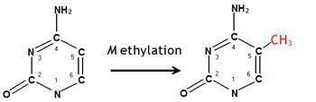
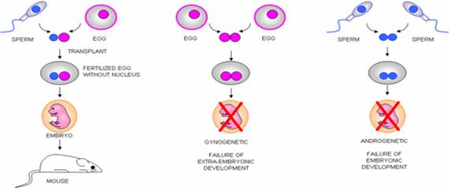
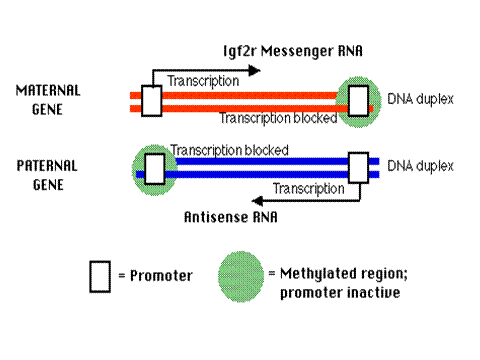
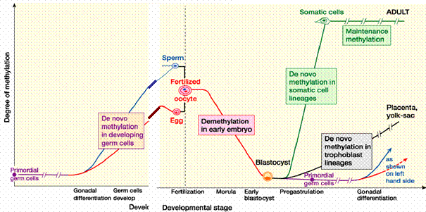

|
|
|
|
|
|
|
|
|
|
|
|
|
|
||
|
|
||||
|
|
|
|
|
|
|
|
|
|
||
|
|
||||

|
|
|
|
|
Evolution, Epigenetics, and Maternal Nutrition
Asim K. Duttaroy
Published on Darwin Day (February 12, 2006)
Introduction
Evolution is the process by which populations of organisms acquire and pass on novel traits. In biology, such a trait or character is a genetically inherited feature of organisms. A synonym trait is phenotype from generation to generation, affecting the overall makeup of the population and even leading to the emergence of new species. Darwin and Wallace proposed that evolution occurs because a heritable trait that increases an individual's chance of successfully reproducing will become more common, by inheritance, from one generation to the next, and likewise a heritable trait that decreases an individual's chance of reproducing will become rarer. The modern evolutionary synthesis brings together Charles Darwin’s theory of the evolution of species by natural selection with Mendel theory of genetics as the basis for biological inheritance. Evolution, however, does not act in a linear path towards a pre-defined goal — it only responds to various types of adaptionary changes. Darwin did not mention the source of variations in individual organisms, but observed that it seemed to be by chance. Later work pinned much of this variation onto mutations in genetic material. Most biologists believe that adaptation occurs through the accumulation of small mutations. Mutations are permanent, transmissible changes to the genetic material (usually DNA) of a cell. Mutations can be caused by copying errors in the genetic material during cell division and by exposure to radiation, chemicals, or viruses, or can occur deliberately under cellular control during the processes such as meiosis. In multi-cellular organisms, mutations can be subdivided into germ line mutations, which can be passed on to progeny and somatic mutations. The DNA sequence of a gene is transcribed into RNA, which is then translated into the sequence of a protein. Thus genes carry the blueprints to make proteins in the cell. Every cell in the body has the same genetic information; what makes cells, tissues and organs different is that different sets of genes are turned on or expressed. More evidence has supported the view that inheritance is not just about which genes we inherit but whether these are switched on or off is a whole new frontier in biology. It raises questions with huge implications, and means the investigation is on to find what sort of environmental (such as gene-nutrients or other chemicals interactions) effects can affect these switches in evolutionary processes. Such non-DNA based forms of heritable variations have been reported to change the way in which genes are expressed or maintained. This epigenetic inheritance is the transmission of information from a cell or multi-cellular organism to its descendants without that information being encoded in the nucleotide sequence of the gene. Epigenetics aims to describe the inheritance of information on the basis of gene expression in contrast to "Genetics", which aims to describe the inheritance of information on the basis of DNA sequence. Investigations continue into whether these mechanisms allow for the production of specific beneficial heritable variation in response to environmental signals (such as nutrition, geographical locations of organisms, please see the skin colour evolution article in MM).. If this were shown to be the case, then some instances of evolution would lie outside of the typical Darwinian framework, which avoids any connection between environmental signals and the production of heritable variation.
Epigenetics
Epigenetics, literally "on" genes, refers to all modifications to genes other than changes in the DNA sequence itself. Mechanisms of epigenetic inheritance include methylation of DNA, modification of histones, binding of transcription factors to chromatin, and the timing of DNA replication. Of these mechanisms, the inheritance of DNA methylation is best understood. In humans, approximately 1% of DNA bases undergo DNA methylation. The epigenetic state of the genome is established in early development and is generally thought to be cleared between generations. Adding methyl groups changes the appearance and structure of DNA, altering how a gene can interact with important transcriptional machineries in the nucleus. In mammals, DNA methylation is most often observed at cytosine residues in the context of a CG dinucleotide (please see the figure below). The transfer of a methyl group (-CH3) to the position 5 of the cytosine ring is carried out by DNA methyltransferases using S-adenosyl-methionine as a methyl group donor.

DNA methylation, particularly when applied to CG-rich promoter sequences, has been shown to silence gene expression in a heritable manner. DNA methylation is therefore a form of cellular memory. Because DNA methylation is not encoded in the DNA sequence itself, it is called an epigenetic modification. The transcriptional silencing associated with 5-methylcytosine is required for fundamental biological processes such as embryonic development, protection against intragenomic parasites, X-inactivation in females, genomic imprinting and cognitive functions. In addition, aberrant promoter methylation and inappropriate silencing of tumor suppressor genes has recently emerged as a major cause leading to cancer.
About 60% of all human genes are transcribed from a CG-rich promoter sequences (called CpG islands). Most of these islands are unmethylated, which correlates with an active status for the gene. CpG sites are clustered in CpG islands, which serve as promoter regions for many genes. The bulk of DNA methylation in mammalian genomes is found at the many repetitive sequences that litter our genomes. Humans and other animals are susceptible to epigenetic changes because of an evolutionary trait in which "junk" remnants of viral infections, called "transposons," inserted themselves randomly within the human and animal genomes. Transposons use the gene replication machinery to reproduce themselves. Cells use methylation as a means to inactivate these junk transposons and prevent their replication. Yet if the transposons have inserted themselves in or near a functional gene, the gene can be inadvertently methylated, too, thereby reducing its expression. It is critical to maintain this “junk DNA” in a transcriptionally silent stage, and DNA methylation is a key process that allows the cells to do just that. Evolutionary studies have revealed that silencing of repetitive “junk DNA” is probably the primary function of epigenetics. In fact, more than 40 percent of the human genome is comprised of transposons that are likely to be methylated, so any genes positioned near them could be at risk for inadvertent methylation. Epigenetics provides the missing link between the environment and the development of diseases that goes beyond many of the subtle changes in DNA that explain only a fraction of the diseases humans develop. It is now clear that the epigenetcis plays also critical in the evolution processess.
Effects of epigenetics on gene expression
Every cell in the body contains two copies of every one of our genes encoded in DNA ladder, with one copy of each gene coming from our mother and one copy from our father (except sex determining genes). Not every gene should be expressed in every cell of our bodies. For example, we do not want our brain cells to make hemoglobin, the protein required to carry oxygen around in our blood. Only those cells that will ultimately make red blood cells should make hemoglobin. If brain cells contain an intact copy of the gene for the hemoglobin protein, why don't brain cells also make hemoglobin?. Hence, these are processes that control what gene is expressed in what cell type and these processes can produce differences in activity of at least a million fold. To regulate the level at which any gene is expressed, there are complex sets of regulatory proteins that bind to parts of the DNA encoding each gene. In very complex organisms such as us, many control factors have to be acting together to achieve the levels of power and refinement of gene regulation needed.
In addition, with most genes, it probably does not matter that both copies of the gene are both active. However, with a few genes, only one copy is normally active. This could be the copy from the mother or the father and which one it is that is active is specific for that particular gene. Some babies are born with abnormalities due to both copies of the gene being active (Prader-Will syndrome, Angelman syndrome). This has been shown to be due to a failure in the establishment of the normal pattern of methyl group tags that blocks the activity of one of the copies of the gene. In addition, there is evidence that, in some cancers, genes that control proliferation of cells can be inactivated by abnormal addition of methyl group tags, resulting in uncontrolled cell division. Because they change how genes can interact with the cell's transcriptional machinery, epigenetic modifications, or "marks," generally turn genes on or off, allowing or preventing the gene from being used to make a protein. On the other hand, mutations and bigger changes in the DNA sequence (like insertions or deletions) change not only the sequence of the DNA and RNA, but may affect the sequence of the protein as well. Mutations in the sequence can prevent a gene from being recognized, amounting to its being turned off, but only if the mutations affect specific regions of the DNA. There are different kinds of epigenetic "marks," chemical additions to the genetic sequence. The addition of methyl groups to the DNA backbone is used on some genes to distinguish the gene copy inherited from the father and that inherited from the mother. In this situation, known as "imprinting," the marks both distinguish the gene copies and tell the cell which copy to use to make proteins.
Imprinted genes and the battle of the sexes
Imprinted genes do not rely on traditional laws of Mendelian genetics, which describe the inheritance of traits as either dominant or recessive. In Mendelian genetics, both parental copies are equally likely to contribute to the outcome. The impact of an imprinted gene copy, however, depends only on which parent it was inherited from. For some imprinted genes, the cell only uses the copy from the mother to make proteins, and for others only that from the father. Imprinting in genetics is not new, but it is gaining visibility as it is linked to more diseases and conditions that affect humans. Centuries ago, mule breeders in Iraq noted that crossing a male horse and a female donkey created a different animal (Hinny) than breeding a female horse and a male donkey (Mule). In the modern scientific era, however, the initial evidence for parent-of-origin effects in genetics didn't appear until the mid 1950s or so. Then, in the mid 1980s, scientists studying mice discovered that inheritance of genetic material from both a male and a female parent was required for normal development. The experiments also revealed that the resulting abnormalities changed depending on whether the inherited genetic material was all male in origin or all female. Around the same time, others discovered that the effects of some transgenes in mice differed when they were passed from the male or female parent. The first naturally occurring example of an imprinted gene was the discovery of imprinting in the IGF-2 gene in mice in 1991, and currently about 70 imprinted genes have been identified in mice and humans. Imprinted genes, unlike most other genes, are expressed only from one allele in a strict parent-of-origin manner. Hence, some genes are only expressed from the allele inherited from the mother, while the others are solely expressed from the allele inherited from the father. This strange mode of inheritance explains why the maternal and paternal genomes, while genetically almost identical, are epigenetically very different. This also explains some classic experiments in which genomes from different parental origins were introduced in enucleated recipient oocytes and then transferred to pseudo-pregnant females in order to assess their developmental potential (please see below, from Surani et al ).

Modified drawing from Janine LaSalleOocytes in which a maternal and a paternal genome were combined gave rise to normal embryos. Oocytes in which two paternal genomes were introduced failed to develop; the resulting embryos never grew properly and showed an abundance of extra-embryonic tissues (placenta). Maternally derived embryos developed further than their paternal counterparts, but had very reduced extra-embryonic tissues and ultimately died. We understand now that imprinted genes are the main stumbling block preventing such asexual reproduction.
It is estimated that imprinted genes might account for ~1% of the total genes, or about 300 genes. These genes play key roles in controlling cell proliferation, a particularly important aspect of embryonic development, and cognitive functions. Many paternally expressed genes tend to favor cellular proliferation or to increase the growth of the placenta or the rate of transfer of nutrients from the mother to the embryo through the placenta. Many maternally expressed genes tend to do just the opposite. These observations are well explained in the context of the “the battle of the sexes”, which explains the evolution of imprinting in mammals with in utero development as a tug of war between both sexes. The premise of the theory is that each sex is trying to maximize its reproductive potential. The trick, however, is that females are the sole provider of nutrients for the growth of the fetus during gestation. Taking advantage of this fact, males try to favor the transfer of nutrients from the mother to their offspring to ensure the birth of “healthy babies”, even if this comes at the expense of the mother’s future reproductive fitness. Females, on the other hand, try to tip the balance back to relieve some of the burden placed on them and increase their future reproductive fitness while providing just the right amount of nutrients to the fetus. Today, establishing this delicate balance is the only way to achieve a successful pregnancy. As for example, IGF2, the gene encoding the insulin-like growth factor-2 In humans (and other mammals like mice and pigs) the IGF2 allele inherited from the father (paternal) is expressed; the allele inherited from the mother is not.If both alleles should begin to be expressed in a cell, that cell may develop into a cancer. IGF2r the gene encoding the cell receptor for Igf-2
In mice the IGF2r allele inherited from the mother is expressed; that from the father is not. Differential imprinting accounts for this, and the mechanism is described below.

In the father's copy of the IGF2r gene (the imprinted version), In the mother's copy of the gene, there is an upstream (left) promoter that is unmethylated and active binding of transcription factors to this upstream promoter enables transcription of the sense strand of the gene to produce Igf2r messenger RNA. There is also a downstream set of CpG islands that are methylated.
The "battle of the sexes" hypothesis in fact is partly based on studies in animals that suggest growth-promoting imprinted genes help ensure the continuation of the father's genes, a particularly important issue for species in which more than one male can contribute to a single litter of offspring. The mother, however, is more interested in maintaining her own health, biologically speaking, and hence her genes "fight" the paternal genes and limit the size of the embryo or fetus. When a sperm and egg meet to form an embryo, each has a different pattern of methylated genes. The patterns are not passed on as genes are, but in a chemical battle of the sexes some of the egg and sperm patterns do seem to be inherited. In general, the egg seems to have the upper hand. A pregnant woman's dietary deficits increase her offspring's risk of diabetes, stroke and heart disease later in life. These startling scientific discoveries illuminate the emerging field of epigenetics, in which single nutrients, toxins, behaviors or environmental exposures of any sort can silence or activate a gene without altering its genetic code in any way.
Fleeting exposure to anything that influences methylation patterns during development can change the animal or person for a lifetime. Methyl groups are entirely derived from the foods people eat (folate, methionine, vitamin B12, selenium, Zinc, vitamin A, whereas alcohol, arsenic etc have negative effects). Our current understanding of genomic imprinting indicates that imprinting centres are differentially marked by DNA methylation (and probably, chromatin modifications) during gametogenesis. This phase of establishment of epigenetic settings is preceded by an erasure phase, where the settings inherited from the previous generation are erased in primordial germ cells. The following figure shows the changes in DNA methylation during mammalian development (Please see the figure (from Falls et al., 1999) below)
 SHAPE \* MERGEFORMAT ,to the
Clearly genomic imprinting provides a unique system where parent-specific, epigenetic modifications are targeted to specific loci to ensure the control of gene expression. It also clearly illustrates the power of epigenetics as both a heritable and reversible manner to control the expression of our genome.Although it has long been thought that the epigenetic slate is wiped clean in the embryo shortly after fertilization (with the exception of imprinted genes), there are now many examples in mammals of clear transgenerational effects after nutritional intervention (protein restriction or carbohydrate-rich diet) or behavioral programming (maternal care). Similar epidemiological data have been obtained for humans, from a Swedish cohort. A grandfather who was "well-nourished" before puberty may transmit a four times higher than normal risk of type 2 diabetes to his grandchildren. Assisted reproduction can also be epigenetically controlled , specially during the time of embryo culture (please see the above figure).
Pembrey et al showed that early paternal smoking was associated with greater BMI at 9 years of age in sons, but not in daughters. This prompted them to return to the records of the 1890, 1905 and 1920 cohorts from Overkalix, Sweden. Previously, they reported an association of ancestral food supply with longevity and with cardiovascular and diabetic mortality. Re-analysis showed that the paternal grandfathers' food supply during mid childhood was linked to the mortality risk ratio of grandsons, but not granddaughters. The study suggested that in humans, a one-off environmental event could influence phenotype for more than one generation in a sex-specific way. If true, these findings implied a novel kind of transgenerational inheritance, an idea strengthened by recent studies in animal systems. The molecular basis for these apparently nongenetic transgeneration effects is not known. One hypothesis is that it involves epigenetics. However, there is increasing evidence that some parts of the genome are not cleared leading to transgenerational inheritance of epigenetic state in these specific parts, termed transgenerational epigenetic inheritance. Their intriguing finding of transgenerational effects that are sex-specific, is also not without precedent in animal systems. It has been known for some time that transient exposure of pregnant female rats to vinclozolin, a fungicide used in the wine industry, can cause reproductive abnormalities in male offspring. A recent study has shown that the reproductive abnormalities, including reduced sperm count and sperm motility, are detected in nearly all male offspring for at least four generations. The effect could not be passed through female subjects; female siblings of affected males in the F2 generation, when mated with untreated controls, produced male offspring with normal fertility.
It is possible that the environmental toxins cause epigenetic changes to the DNA in the developing germ line of the male embryos, and that this change is maintained and carried along with the sperm to the next generation. However a role for the Y chromosome, similar to that postulated by Pembrey, remains a possibility. Whether this is a new kind of genetic event, which is Y-specific, or an epigenetic event that is sperm-specific, or something else altogether, remains unclear. From a public health point of view, what makes the Pembrey study particularly interesting is that it argues that exposure in the male can affect the development and health of males for at least two generations, and this is rarely, if ever considered. Furthermore, these findings may go some way toward shifting the balance of responsibility for the unborn, away from the mother to the father.
Maternal Nutrition and Epigenetics
Epigenetics represents a huge opportunity to study an alternative pathway that explains why individuals respond differently to environmental signals. For example, why does one identical twin develop schizophrenia and not the other? Why do certain disease genes seem to affect some people more than others? Why do complex diseases like autism turn up in more boys than girls? For answers, epigeneticists are looking at biological mechanisms other than mutation that affect how genes function.. The genes on one of the two X chromosomes in each female cell are silenced by methylation (dosage). Darwin's theory, though it succeeded in profoundly shaking scientific opinion regarding the development of life, could not explain the source of variation in traits within a species. There are different patterns of gene activity in humans that are the consequences of different epigenetic influences; these definitely induce differences in development of the body, and may bias the development of the brain in various subtle ways, but any intrinsic biological differences in the operation of the adult brain are also influenced by social and cultural factors.
Nutrition is one of the most important players in the epigenetic repertoire. For example, maternal diet during pregnancy is very important in fetal development but in ways that are not yet fully understood. The maternal reproductive tract, arguably, is the environment most critical to the developing mammalian embryo. Its metabolic and physiologic characteristics modulate the zygote's development through all embryonic stages until birth. Indeed, the conditions in the embryo's immediate milieu seem to determine many characteristics and susceptibilities of the adult organism.
SAME GENOME, DIFFERENT EPIGENOME
Maternal nutrition affects the phenotype of offspring by influencing the degree of CpG methylation at the agouti locus. Variability in CpG methylation at the agouti locus causes differences in coat color among genetically identical mice (Reprinted from, Molec Cell Biol, Aug 2003)
With the help of some obese yellow mice, we now know how mother's diet can permanently alter the functioning of genes in her offspring without changing the genes themselves. The epigenetic state of the the agouti viable yellow locus, containing a gene contributing to coat colour in mice can be manipulated by latering the diet of the pregnant female. The unusual strain of mouse carries a kind of trigger near the gene that determines not only the colour of its coat but also its predisposition to obesity, diabetes and cancer. When pregnant mice were fed extra vitamins and supplements, the supplements interacted with the trigger in the fetal mice and shut down the gene. As a result, obese yellow mothers gave birth to standard brown baby mice that grew up lean and healthy. The research is a milestone in the relatively new science of epigenetics, the study of how environmental factors like diet, stress and maternal nutrition can change gene function without altering the DNA sequence in any way. Such factors have been shown to play a role in cancer, stroke, diabetes, schizophrenia, manic depression and other diseases as well as in shaping behavioral traits in offspring. A Dutch famine near the end of World War II led to an increased incidence of schizophrenia in adults who had been food-deprived during the first trimester of their mothers' pregnancy. Malnourishment among pregnant women in the South during the Civil War and the Depression has been proposed as an explanation for the high incidence of stroke among subsequent generations.
Methyl groups play a critical role in controlling genes involved in prenatal and postnatal development, including some 80 genes inherited from only one parent. Dietary intake of folic acid regulates methylation in our body. During human pregnancy folic acid supplementation is critical not only to prevent neural tube defects but also for proper maintenance of imprinting genes that control our cognitive function too. Because these imprinted genes must be methylated to function, they are vulnerable to diet and other environmental factors. In animal models, these types of effects, termed fetal programming, can be produced by exposing offspring in utero to a manipulation such as dietary restriction of the pregnant female. Although most studies of fetal programming only address effects in the first-generation offspring, there is strong evidence that, at least in some cases, these programmed phenotypes are maintained for several generations. For example, prenatal programming of birth weight by maternal food restriction or maternal exercise have been shown to last for more than one generation. The effects of maternal nutrition or other environmental 'exposures' are well recognised in mammals, including humans.
Maternal care, for example, has long been known to affect behavioral outcomes of children, as exemplified by orphans who grow up neglected or impoverished. linked maternal grooming behaviors in rats to a specific brain change in the glucocorticoid receptor, which controls the level of stress hormone released by the adrenal glands. Rats that were not properly licked -- a rodent's form of nurturing - produce more stress hormones as adults. The mechanism behind this effect is due to a loss of methylation in the part of the glucocorticoid receptor gene that controls its expression. It is therefore possible that exposures to pesticides, toxins and synthetic compounds can methylate genes in adulthood and give rise to a host of diseases – such as cancer and asthma - whose prevalence has soared in recent decades. Pesticides encountered in utero might be dormant in the fetus, only to cause cancer ten, 20 or 50 years later. Even the lowest detectable limits of a chemical can have dire effects on a living organism. Less than one part per billion of this widely used corn herbicide de-masculinizes developing frogs or causes dual male-female genitalia.
Gene-nutrient interactions can produce visible as well as stealth changes in embryonic or fetal development, but they set the stage for an adult's susceptibility to a host of diseases and behavioral responses. Moreover, epigenetic changes – so named because they sit on top of the gene and leave its sequence unchanged – can also be passed down from one generation to the next. Unlike defective genes, which are damaged for life, methylated genes can be demethylated. And, methyl tags that are knocked off can be regained via nutrients, drugs, and enriching experiences. No longer are mutant genes sought as the sole cause of disease. The dramatic rise in obesity, heart disease, diabetes and other conditions of prosperous nations are increasingly pegged as epigenetic in nature, and may well claim their origins in faulty embryonic development. We are, quite literally, what we eat as well as what our parents and even grandparents ate. In South Asia, undernutrition in one generation is followed by fat-laden fast foods the next. Children are set up in utero to experience an environment of low nutrition and find themselves in the land of plenty. The epigenetic software is programmed for one scenario but encounters another, often with disastrous results. Seismic shifts in food sources, geographic locations, chemical exposures and even weather patterns can alter gene expression through epigenetic changes. In Finland, researchers have linked an infant's low birth weight to the adult prevalence of coronary heart disease, diabetes, hypertension, stroke and even osteoporosis. Longitudinal studies have shown that low-weight newborns are biologically different for life than their bulkier counterparts. Smaller infants have fewer kidney nephrons, altered metabolism, and are more insulin resistant. These deficits reflect a fetus' response to being undernourished, and they wire their genes to respond differently to the environment that follows outside the womb. Malnourished fetuses adopt several strategies to optimize their chances of survival during the neonatal period, but these strategies assume that the same type of nutritional conditions will prevail. The adaptations adopted during fetal programming may prove to be detrimental if food becomes more abundant. Thus, any change in condition may have deleterious consequences.
Conclusions
The epigenetic mechanisms (non-Mendelian genetics) control gene expression as a results of environmental signals due to their inherent malleability, and the potential role of imprinted genes during critical time windows in epigenetic programming, from the very beginning of development, throughout life. Considerable evidence to suggest that maternal nutritional imbalance and metabolic disturbances, during critical time windows of development, may have a persistent effect on the health of the offspring and may even be transmitted to the next generation. The converging data supporting the hypothesis that, in addition to "thrifty genotype" inheritance, individuals with obesity, type 2 diabetes, and metabolic syndrome with an increased risk of cardiovascular diseases have suffered improper "epigenetic programming" during their fetal/postnatal development due to maternal inadequate nutrition and metabolic disturbances and also during their lifetime, that could even be transmitted to the next generation(s). Recent evidence suggests that the paternal diet and behaviour may also affect health of offspring. Increasing our understanding on epigenetic patterns significance and their role in development, evolution and adaptation and on small molecules (nutrients, drugs, toxins) that reverse epigenetic activation/inactivation should provide us with the means to "unlock" silenced (enhanced) genes, and to "convert" the obsolete human thrifty genotype into a "squandering" phenotype.
References
Argeson AC, Nelson KK, Siracusa LD. (1996) Molecular basis of the pleiotropic phenotype of mice carrying the hypervariable yellow (Ahvy) mutation at the agouti locus. Genetics 142:557-567
Behe, M. J. (1996) Darwin's Black Box: The Biochemical Challenge to Evolution. Simon and Schuster, New York.
Darwin C (1859). The Origin of Species
Duttaroy, A.K. (1997) Placental transfer of long chain polyunsaturated fatty acids. Prenatal and Neonatal Medicine 2, 101-107.
Falls, J.G. , Pulford, D.J., Wylie, A.A., Jirtle, R.L. (1999) Genomic Imprinting: Implications for Human Disease, American Journal of Pathology. 1999;154:635-647
Gong, Y., Gu, S, Woodruff, R.C. (2005) The Influence of Premeiotic Clusters of Mutation on Indirect Estimations of Mutation Rate, Human Heredity 60, 150-155.
Holliday R, Ho T, Paulin R. 1996. Gene silencing in mammalian cells. In: Russo VEA, Martienssen RA, Riggs AD, editors. Epigenetic mechanisms of gene regulation. Plainview (NY): Cold Spring Harbor Laboratory Press. p 47-59
Maher ER, Afnan M & Barratt CL 2003 Epigenetic risks related to assisted reproductive technologies: epigenetics, imprinting, ART and icebergs? Human Reproduction 18 2508–2511
Manning M, Lissens W, Weidner W & Liebaers I 2001 DNA methylation analysis in immature testicular sperm cells at different developmental stages. Urologia Internationalis 67 151–155
Pembrey ME, Bygren LO, Kaati G, Edvinsson S, Northstone K, Sjostrom M, Golding J., . (2006) Sex-specific, male-line transgenerational responses in humans. European Journal of Human Genetics, 14(2):159-66.
Schneider, T. D. (2000) Evolution of biological information. Nucleic Acids Research 28(14): 2794-2799
Surani M.A. (1998) Imprinting and the Initiation of Gene Silencing in the Germ Line, Cell 93, 309.
Waddington, C. H. (1953) Epigenetics and evolution. In R. Brown and J. F. Danielli (eds.), Evolution: Society of Experimental Biology Symposium 7. Cambridge University Press, Cambridge, pp. 186 199
Wolffe AP, Matzke MA. (1999). Epigenetics: regulation through repression. Science 286:481-486
Van de Vijver, G. Van Speybroeck, L., De Waele, D. (2002) Epigenetics: A Challenge for Genetics, Evolution, and Development? Annals of the New York Academy of Sciences 981:1-6.
Professor Asim K. Duttaroy is a Faculty of Medicine, University of Oslo Norway